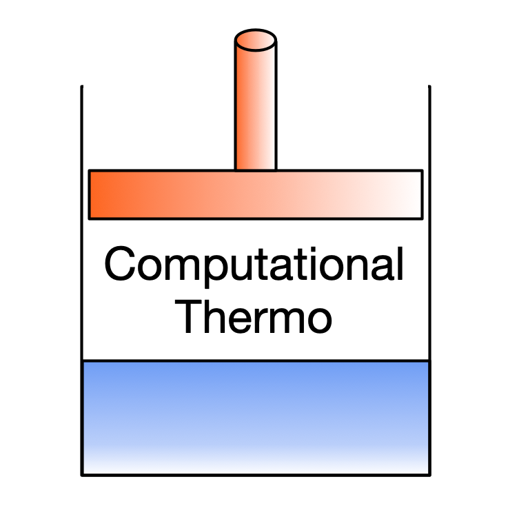
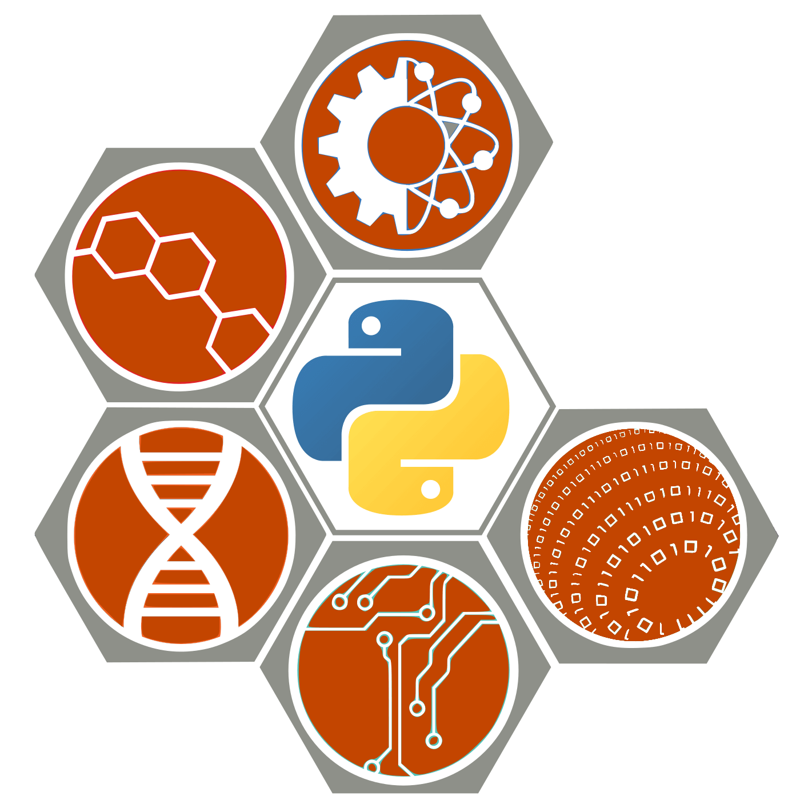
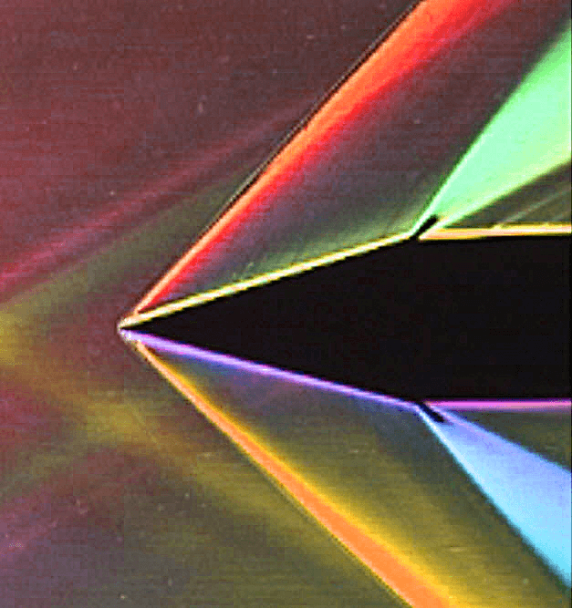
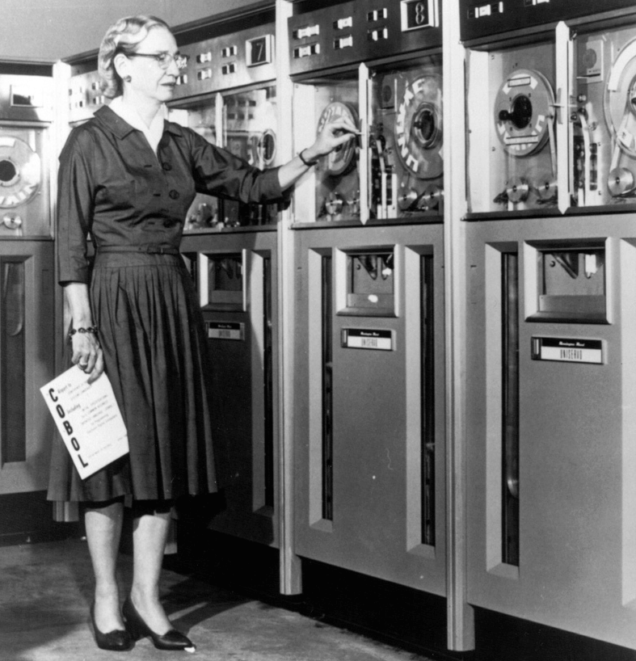
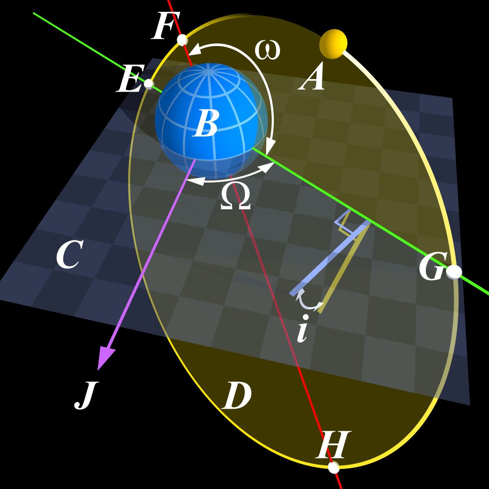
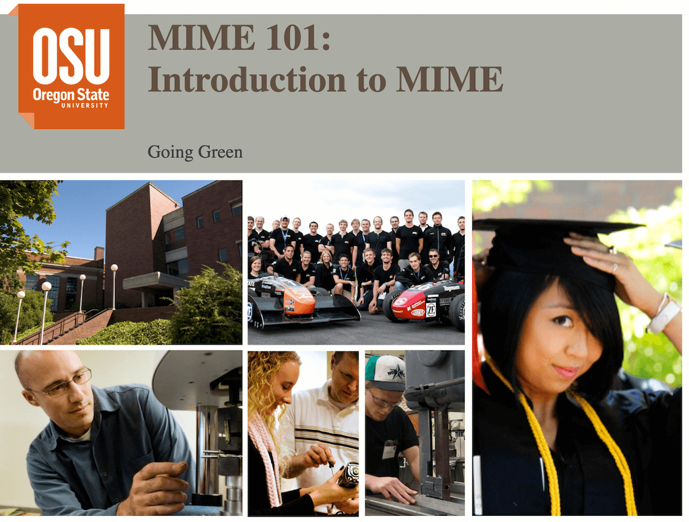
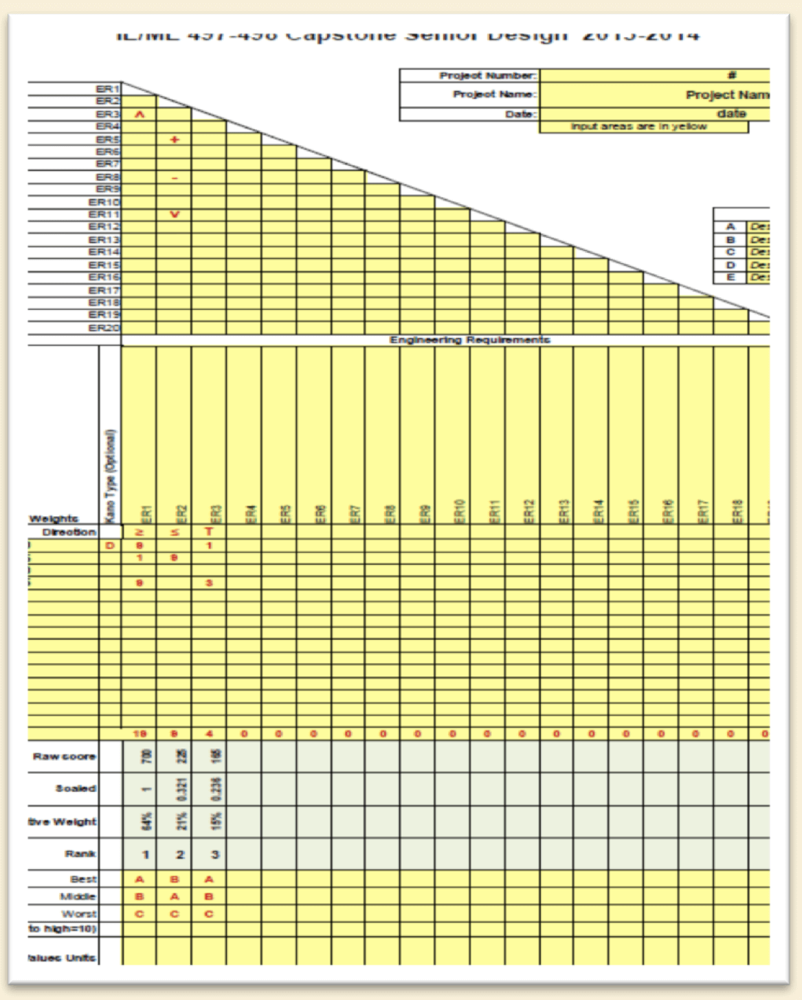

Kyle E. Niemeyer, Ph.D.
he/him/hisAssociate Professor
Welty Faculty Fellow
Associate Head for Undergraduate Programs
School of Mechanical, Industrial, and Manufacturing Engineering
Oregon State University
Associate Editor-in-Chief, JOSS
email ⋅ mastadon
These are classes I teach regularly.

ME 540 Intermediate Thermodynamics (last taught Spring 2022) . This graduate thermodynamics course covers how to solve advanced problems in thermodynamics using computational tools, including phase and chemical equilibrium, and introduces statistical thermodynamics.
ME 499 Rocket Propulsion (last taught Winter 2022) . The undergraduate elective course covers the fundamentals of rocket propulsion, focusing on chemical propulsion types (liquid, solid, hybrid).

ME 599 Software Development for Engineering Research (last taught Winter 2022) . This project-based graduate course aims at advancing computational research skills.

ME 461/561 Gas Dynamics (last taught Fall 2021) . This combined undergraduate/graduate course introduces compressible fluid flows, including flows in nozzles and diffusers, as well as shocks/expansion waves and their interactions. It also introduces supersonic flight and propulsion systems.

ME 373 Mechanical Engineering Methods (last taught Winter 2020) . This third-year course covers analytical and numerical methods for solving ordinary and partial differential equations, with applications to problems in mechanical engineering.

AAE 412/512 Space Systems Engineering (last taught Fall 2020) . This is a combined senior and graduate course on topics related to space systems, including orbital mechanics and trajectory design, propulsion systems, stability and control of spacecraft, and space mission engineering.
ME 599 Advanced Combustion (last taught Fall 2016) . This was an advanced graduate-level course on fundamental principles of combustion, co-taught with David Blunck.

MIME 101 Introduction to MIME (last taught Fall 2015) . This was a first-year course providing an overview of mechanical, industrial, and manufacturing engineering as well as academic success skills

ME 331 Introductory Fluid Mechanics (last taught Fall 2014) . This third-year course introduces concepts and applications of fluid mechanics and dimensional analysis.

ESE 497 MIME Capstone Design (last taught Fall 2014) . This is a senior-level design capstone course for Energy Systems Engineering (ESE) students, covering real-world product design, project management, and professional communication skills.
Copyright Kyle E. Niemeyer. See this site's GitHub repository to view source and provide feedback.